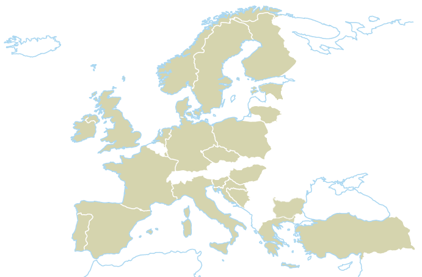
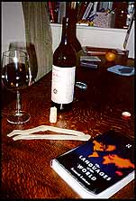

If you're travelling in Europe then save yourself the hassle of language courses: everything you need is in the table below. Remember: the more obscure the language you learn, and the more widespread your own native tongue, the more brownie points you get WHY? .

hi
hola
olá
salut
hallo
ciao
merhaba
cześć
hoi
szia
γεια σου
Здрасти
ahoj
hola
hej
moi
hei
bok
hej
ćao
ćao
ola
làbas
Dia duit
moien
Deth da
živjo
tsau
salut
Imagine: you are in a bar, so you say Hi, a beer please to the waiter or barman. You drink the beer, life is good. Someone else buys you a drink, so you say thanks and they say you're welcome. You both say cheers and drink more beer.
| English | 470 | hi | a beer | please | thank you | you're welcome | cheers! |
|---|---|---|---|---|---|---|---|
| Bosnian | 4 | ćao | pivo | molim | hvala | nema na čemu | źivjeli! |
| Bulgarian | 9 | Здрасти | Бира | Моля | благодаря | Моля | Наздраве! |
| Catalan | 9 | hola | una cervesa | si us plau | mercés | de res | salut |
| Cornish | 0 | Deth da | coref | mar plek | mur ras | ||
| Croatian | 5 | bok | pivo | molim | hvala | molim | zivili! |
| Czech | 11 | ahoj | pivo | prosím | díky | není zač | na zdraví |
| Danish | 5 | hej | en øl | tak | mange tak | velbekomme | skål! |
| Dutch | 21 | hoi | een bier | alsjeblieft | bedankt | graag gedaan | proost! |
| Estonian | 1 | tsau | üks õlu | palun | aitäh | tänan | terviseks! |
| Finnish | 6 | (moi) | bisse | - | kiitos | ole hyvä | kippis! |
| French | 124 | salut | une bière | s'il vous plaît | merci | je vous en prie | santé! |
| Galician | 4 | ola | una cervexa | por favor | grácias | de nada | saúde! |
| German | 121 | hallo | ein Bier | bitte | danke | bitte sehr | prost! |
| Greek | 12 | γεια σου | μια μπιρα | παρακαλω | ευχαριστω | παρακαλω | γειά μας! |
| Hungarian | 14 | szia | egy sört | kérek | köszi | szívesen | egészségedre! |
| Irish | 1 | Dia duit | Beoir | le do thoil | go raibh maith agat | tá fáilte romhat | sláinte! |
| Italian | 62 | ciao | una birra | per favore | grazie | prego | cin cin! |
| Lithuanian | 3 | làbas | alus | prašau | ačiû | prašau | I sveikatą! |
| Luxemb. | 0.4 | moien | ee béier | wanechgelift | merci | wanechgelift | prost! |
| Norwegian | 5 | hei | en halvliter | - | takk | versågod | skål! |
| Polish | 44 | cześć | jedno piwo | proszę | dzięki | proszę | na zdrowie! |
| Portuguese | 182 | olá | cerveja | por favor | obrigado | de nada | saúde |
| Romanian | 23 | bunǎ | o bere | mulțumesc | vǎ rog | cu plǎcere | noroc |
| Serbian | 12 | ćao | pivo | molim | hvala | nema na čemu | živeli! |
| Slovenian | 2 | živjo | pivo | prosim | hvala | prosim | na zdravje! |
| Spanish | 381 | hola | una cerveza | por favor | gracias | de nada | salud! |
| Swedish | 9 | hej | en öl | tack | tack så mycket | var så god | skål! |
| Turkish | 59 | merhaba | bir bira | lütfen | tesekkürler | bïr sey degil |
Working out the correct pronunciation is left as an exercise for the reader, with the Greek and Irish phrases being the most challenging.
Note that if you are in a proper pub, then asking for 'a beer' is not nearly specific enough. Please try all of the locally-brewed beers, learn their names and pronunciations, and send these to us by e-mail, along with tasting notes.
I tried to get all the accented characters right in Unicode, so please let me know if any the accents are wrong or missing in your language. The numbers in the table's second column are the numbers of speakers, in millions (source).
There are some phrases that only apply to a certain country or nationality:
For obscure linguistic reasons, some of the phrases don't translate easily into some languages:
A while ago I was looking through my grandmother's attic and found an old dusty copy of The Automobile Association Conversation Handbook for Tourists, published by l'Alliance Internationale de Tourisme, Genève. This old-fashioned phrasebook has the most bizarrely anglocentric phrases (I didn't make them up, so don't send me corrections), typified by the following.
Of course, if you’re English and visiting Continental friends, then you have an obligation to perpetuate certain stereotypes that are prevalent in Continental Europe, so these phrases might turn out to be useful after all.
{kind=link}